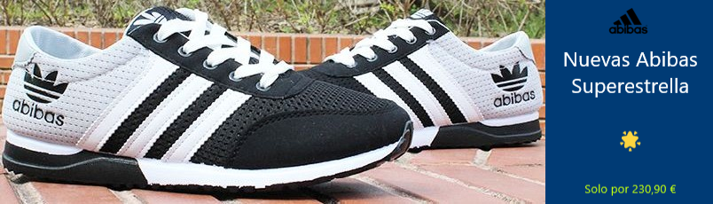

Un desastre llamado Zach Wilson
La incapacidad de Zach Wilson para leer defensas ha sido evidente en su desempeño hasta ahora. Ha tenido dificultades para reconocer las coberturas defensivas y hacer ajustes en consecuencia. Esto ha llevado a varios errores y pérdidas de balón, lo que pone en peligro las posibilidades de éxito del equipo. Además, Wilson ha tenido problemas para progresar en sus lecturas durante el juego. A menudo se queda demasiado tiempo en su primera opción de pase y no logra avanzar a receptores secundarios o salir de la estructura del ataque cuando es necesario. Esto ha llevado a una falta de eficiencia en su juego y ha limitado la capacidad del equipo para mover el balón.